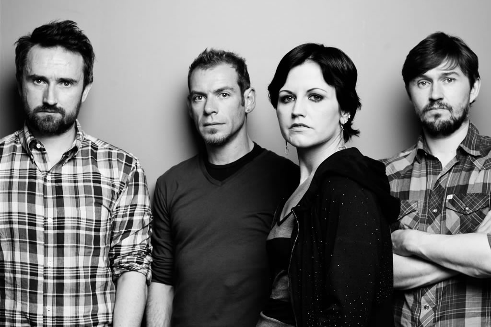

Despues de casi 20 años finalmente... CRANBERRIES!!!!
En mi opinion fue un muy muy muy buen evento, considerando que Cranberries tiene una buena base de fans en Mexico, seguidores desde los 90's. Es arriesgado que hagan masivos en otros lados donde no probablemente llenarian y que mejor lugar que nuestro Cancun increible para realmente disfrutar un espectaculo tal como los Cranberries. Un lugar con muy buena acustica, una Dolores con una voz a la altura como siempre, una banda que suena como en sus buenos dias .... eventazo por donde lo vea!!
